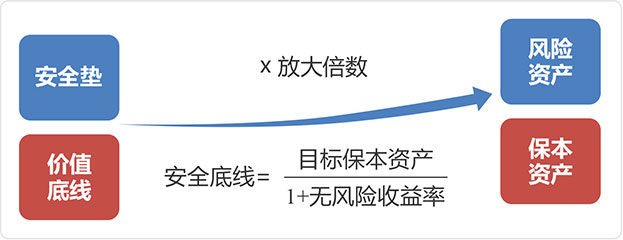
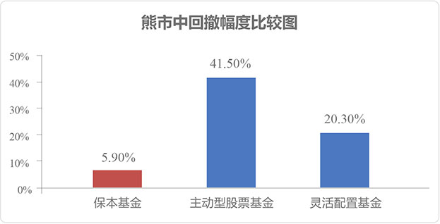

CPPI策略，通过设置防守“安全垫”，确保投资者到期的本金安全。通过动态调整风险倍数，实现熊市保本、牛市进取的目标。
 第二重保障：深圳市高新投承担不可撤销连带责任保证实力担保机构——深圳市高新投集团有限公司，为本基金提供不可撤销的连带责任保证。
在充满不确定性的市场里，保本基金一方面能立足保本，帮助投资者控制本金亏损风险；另一方面又讲求“稳扎稳打，步步为营”，在保本基础上尽可能地抓住市场的潜在投资机会，追求创造更佳投资收益。

数据来源：wind，时间区间 2015年6月15日——2015年8月31日，同期沪深300指数下跌36.90%，此区间认定为熊市。
历史数据仅供参考，不代表保本基金的风险收益特征。
数据来源：wind，时间区间 2012年1月1日——2013年12月31日，同期沪深300指数下上涨1.36%，振幅达到54.62%，认定此区间为震荡市。
历史数据仅供参考，不代表保本基金的风险收益特征
汇添富基金固定收益投资团队平均从业年限超过13年，实战经验丰富，业务资源广泛。目前已形成了梯队清晰、分工合理的专业团队，团队高度稳定。
汇添富在业内以“选股专家”著称，业绩傲人，取得了多项由权威机构颁发的奖项。以2015年业绩为例，旗下偏股型基金全年平均涨幅达到67.47%，不仅在大型基金公司中位居第一，更较全市场偏股型基金平均涨幅超出近三分之一！
数据来源：银河证券进研究中心，汇添富整理，截止2015年12月31日大型基金公司指在中国基金业协会2015年12月底公募基金规模排名前20名的基金公司。
保本，是汇添富许您的诺言
汇添富盈鑫保本基金的保本周期为3年，募集期购买，保本期间不赎回，汇添富许您一个全额保本！
触发收益率，是最贴心的安排
当连续15个工作日基金份额累计净值增长率达到18%，保本周期提前结束，投资者可以提前落袋为安！
保本基金投资小秘密
1、不是任何时候买都保本的哦~，只有投资者在募集期时购买的份额，才能享受保本待遇；
2、只有持有保本周期到期的基金资产才能享受保本，提前赎回不保本；
3、本基金认购上限为50亿元，额满即止。
| 基金名称 | 汇添富盈鑫保本混合型证券投资基金 | |
| 基金代码 | 002420 | |
| 基金托管人 | 中国工商银行 | |
| 投资理念 | 本基金通过投资组合保险技术来运作，在保证本金安全的前提下，力争在保本期内实现基金财产的稳健增值。 | |
| 业绩比较基准 | 三年期银行定期存款收益率（税后） | |
| 募集上限 | 50亿元 | |
| 认购费率 | 购买金额（M） | 认购费率 |
| M＜100万 | 1.00% | |
| 100万≤M＜500万 | 0.50% | |
| M≥500万 | 1,000元/笔 | |
| 管理费率 | 1.20%/年 | |
| 托管费率 | 0.20%/年 | |